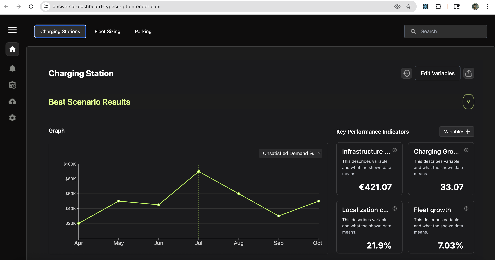
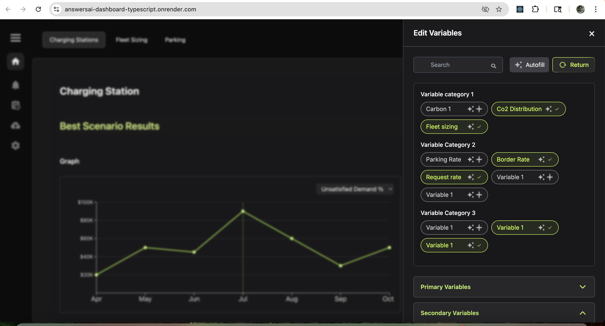
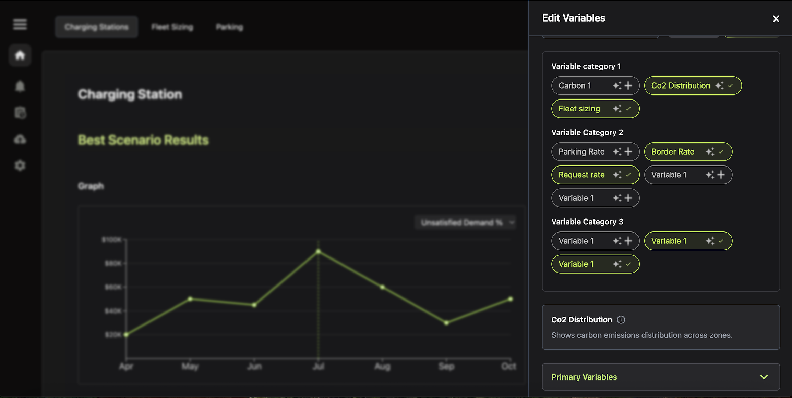

AnswersAi Scenario Visualization Platform
GitHub Code
1. Project Overview
This interactive system is a scenario-based planning and visualization interface used to explore AI simulation results, edit configuration variables, and monitor KPI trends with contextual insights.
2. Key Features
- Slide-Over Interaction: Click on "Edit Variables" to trigger a slide-over panel with animated transitions and a variable-editing form.
- Hover Details Panel: Hovering over graph data points reveals a fade-in tooltip card with contextual information.
- Variable Tooltips: Hovering on variables shows a helper tooltip with contextual insights to aid in selection.
- State Management: Implemented using React Hooks and Redux Toolkit for scalable and efficient state updates and global data sharing.
- Sidebar Navigation: Clean vertical navigation bar for quick access to key sections like Dashboard, Projects, Members, Messages, and Clients.
- Topbar Functionality: Search bar, user profile preview, and real-time notifications built into a minimal topbar UI.
- Project Stats: Charts showing yearly project trends, with visually separated cards for comparison.
- Device Platform Breakdown: Project allocation split across Web, Android, iOS, and Tablets using icon-enhanced UI.
- Current Projects View: Cards display project name, type, deadline, progress, and assigned team members.
- Clients & Teams Section: Separate visual lists for active clients and categorized team members with avatars.
- Visual Progress Indicators: Progress bars and attachment indicators communicate data at a glance.
- Responsive Layout: Layout adapts smoothly across devices with Tailwind's responsive utilities.
- Modern Design: Focus on spacing, color, accessibility, and minimal clutter, supporting clarity and engagement.
3. Technologies Used
- Language: TypeScript
- State: React Hooks, Redux Toolkit
- Animations: Tailwind transitions & custom fade-ins
- Frontend: React, React Router
- Styling: Tailwind CSS
- Icons: react-icons
- Data Visuals: Inline SVG graphs
- Build Tool: Vite (for fast builds and live reload)



4. Why This Project Stands Out
- Simulates real-world team/project manager UI use cases with production-grade layout.
- Demonstrates clean and scalable React component structure.
- Visually rich but minimal UI/UX using Tailwind’s design system.
- Excellent for resume and frontend engineering interviews that ask for design-to-code transformation.
- Helps highlight data visualization skills and responsive UI best practices.
5. Deployment
Deployed on Render using the Vite static build output. The app is fast, optimized, and instantly shareable. To deploy, run npm run build and set publish directory to dist on Render or Netlify.
This project makes for a great demo during interviews or on a professional portfolio as a modern admin solution.
← Back to Portfolio